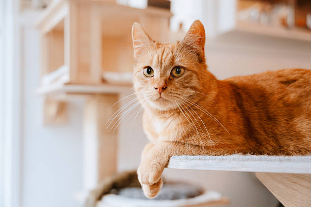

CHAPTER 01 / THE MYSTERY
Where Is
My Cat?
It's 4:12 p.m. You just got home. Your cat Miso's food bowl is full, but Miso is nowhere to be found.
Can you find Miso before dinner?
START SEARCHING ↓
MISSING: MISO ♡
CHAPTER 02 / THE SEARCH
Where will you look first?
Every room tells a different part of the story.
CLICK A ROOM TO EXPLORE
Your Case File
The page remembers what you have found.
0Searches
0 / 3Rooms checked
0 / 2Clues collected
YOUR CLUES:
○ Crumbs
○ Pawprints
YOUR STORY / NOT STARTED
A mystery is waiting...
Choose one of the three rooms above. Look for clues and see how your decisions change the ending.
TIP: Try visiting the rooms in different orders.